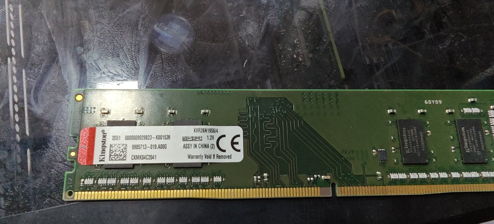
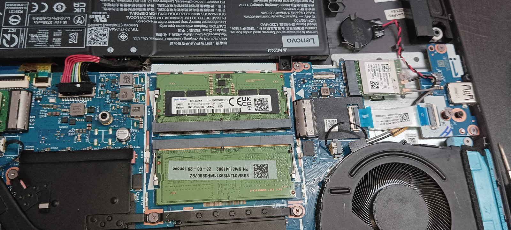

How to make an old laptop fast again: the SSD and RAM upgrade
Before you spend ₹30,000 on a new laptop, spend twenty minutes reading this. A large share of the "slow laptop" machines that come to our shop don't need replacing. They need an SSD. The customer walks out having spent ₹2,500 instead of ₹30,000, and the laptop feels new.
This isn't always true. The rest of this guide is about telling the two cases apart.
Why old laptops feel slow
People assume it's the processor. It almost never is. A processor from 2017 can still comfortably run a browser and a PDF. What's actually happening is one of two bottlenecks:
- A mechanical hard disk (HDD). It has a physically spinning platter and a moving arm. Every time Windows needs a file, that arm moves. Modern Windows asks for files constantly. This is why boot takes four minutes and Chrome takes twenty seconds to open.
- 4GB of RAM. Windows 10/11 alone uses over 3GB. Everything else spills onto the slow disk.

Fix those two and the processor stops being the limiting factor at all.
What the upgrade costs
For roughly ₹3,500, a 2016-era i5 laptop with an HDD and 4GB RAM becomes a machine that boots in fifteen seconds and handles a full mock test without stutter. I've done this conversion hundreds of times. The customer's reaction is always the same.
What you need to check first

- Does the laptop have a free RAM slot, or is RAM soldered? Search your exact model number plus "RAM upgrade" — most business laptops have slots, many thin consumer models solder it. If soldered at 4GB, the upgrade is much less attractive.
- What RAM type does it take — DDR3 or DDR4? They are physically incompatible. The wrong stick simply won't fit, and a mismatched stick can cause boot failures or blue screens. Check the model, or open Task Manager → Performance → Memory, which shows the type on most machines.
- Does it have an M.2 slot, or only a 2.5" SATA bay? Older machines take a 2.5" SATA SSD (the size of the old hard disk). Machines from about 2016 onward often have an M.2 slot, which takes a smaller, faster stick. Either is a massive upgrade over an HDD.
- Is the processor 4th gen Intel or newer? Below that, Windows 11 won't officially install and the machine is genuinely old. Upgrading a 2nd-gen i3 is money spent on a dead end.
When NOT to upgrade
I talk customers out of this upgrade regularly. Don't do it when:
- The processor is older than 4th gen Intel (i3-2xxx, i5-3xxx and similar). Save the money toward a better machine.
- The hinges are cracked or the body is coming apart. You're upgrading a machine that will physically fail.
- The screen has lines or heavy backlight bleed. Screen replacement pushes total cost past what a decent used laptop costs.
- RAM is soldered at 4GB and cannot be increased. An SSD alone helps, but 4GB will keep hurting you.
Doing it yourself vs paying a shop
On most business laptops, this is genuinely a beginner job: a few screws on the bottom panel, the SSD slides into place, the RAM stick clicks in at an angle and presses flat. Fifteen minutes with a small Phillips screwdriver.
Two things people get wrong. First, they forget to plan for the data — you either clone the old drive (needs a SATA-to-USB cable, ₹300) or do a clean Windows install and copy files back. Clean install is usually better anyway on a machine that's been slow for years. Second, they buy the wrong RAM type. Measure twice.
If you're not comfortable, any shop will do it for ₹200–400 labour. That's not a rip-off, that's a fair rate. Bring your own parts if you've researched them.
The broader point: the used laptop market and the upgrade market are the same market. A laptop that looks like a bad deal at ₹18,000 with 4GB and an HDD might be an excellent deal at ₹18,000 + ₹3,500 of parts. Knowing this changes what you're willing to look at.